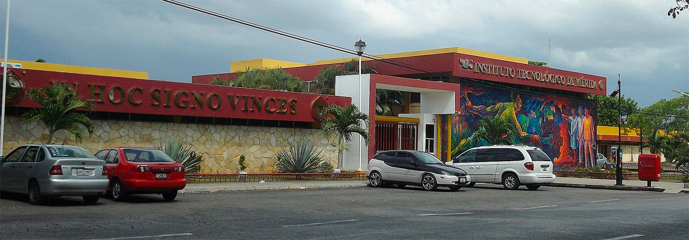
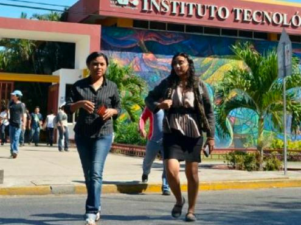

Bienvenidos a nuestro sitio web
La comunidad del Instituto Tecnológico de Mérida les da la más cordial
bienvenida a esta Página Web, donde Podrá encontrar información que le
puede ser de gran utilidad.
Una de las metas propuestas al brindar este servicio es que todas
aquellas personas que deseen consultar aspectos sobre la institución,
carreras que ofrece, actividades, eventos, servicios generales, becas,
reglamento de los estudiantes, o simplemente temas diversos; puedan
encontrar aquí todo lo que necesiten.
OBJETIVO

Formar profesionistas líderes, analíticos, críticos y creativos con visión estratégica y amplio sentido ético, capaces de diseñar, implementar y administrar infraestructura computacional para aportar soluciones innovadoras en beneficio de la sociedad, en un contexto global, multidisciplinario y sustentable.
CAMPO DE TRABAJO

Empresas y organismos en todos los campos de la actividad económica, gubernamental y de educación, en donde se puedan optimizar los procesos al automatizar el manejo de la información, al desarrollar infraestructura de redes y proporcionar soluciones en la áreas de la tecnología computacional.
MATERIAS
 Semestre 1
Semestre 1
- Cálculo diferencial
- Fundamentos de Programación
- Matemáticas Discretas
- Taller de Administración
- Fundamentos de Investigación
Semestre 2
- Cálculo integral
- Programación Orientada a Objetos
- Contablidad financiera
- Química
- Probabilidad y Estadística
Semestre 3
- Cálculo vectorial
- Estructura de datos
- Cultura Empresarial
- Sistemas Operativos
- Investigación de operaciones
Semestre 4
- Ecuaciones Diferenciales
- Tópicos avanzados de programación
- Fundamentos de base de datos
- Taller de sistemas operativos
- Metodos numericos
Programación web
7SB